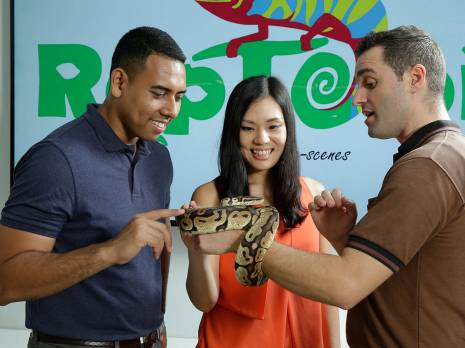
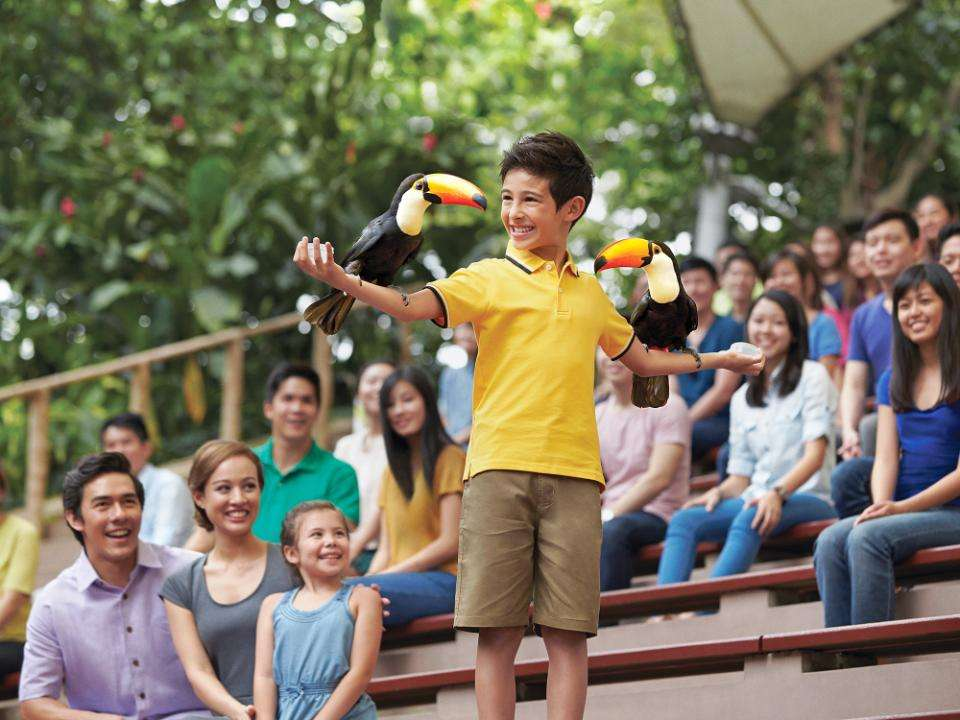
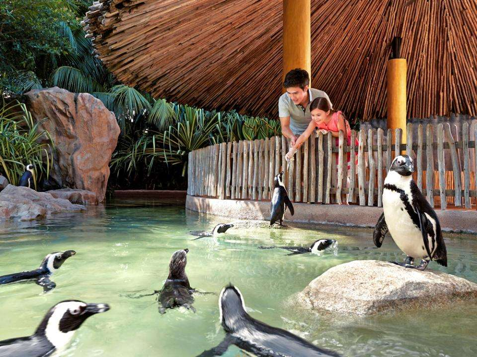

Things you can do
- Tours
- Shows
- Feed the animals
Private buggy tours (up to 6 pax)

Embark on a free and easy tour with your personal guide on your own private buggy. Get to plan your own itinerary* from the exhibits you wish to visit, the animal shows you don’t want to miss and the animal token feeding sessions you wish to experience first-hand!
The 7-seater buggy can be booked for birthday parties, proposals and wedding photography purposes.
*Subject to animal show and feeding scheduled timings
Behind the scenes tours (up to 6 pax)
Snuggle up to Sally the hornbill for an intimate behind-the-scenes experience! Meet a chick nanny and discover insider stories on how endangered hatchlings are cared for at the Breeding & Research Centre.
Schedule
There are 2 shows that is happening twice daily and each lasts for 15 to 20 minutes (weather permitting). Here’s the schedule for you to get the most out of your visit to Jurong Bird Park.
| Show | Location | Morning show | Afternoon show |
|---|---|---|---|
| Kings of the Skies | Hawk Arena | 10:00am | 4:00pm |
| High Flyers | Pools Amphitheatre | 11:00am | 3:00pm |
Witness the presence of magnificent predators such as the white-tailed sea eagle, the hooded vulture and the Harris's hawk. Also, discover how the Malay fish owl catch prey with its strong, steady talons.
Featuring an all-star cast of our most popular birds and rising scene stealers, the High Flyers Show showcases their natural talents, breathtaking plumage and sharp-as-claws IQ.
Get acquainted with some of our birds during their feeding sessions.
Purchase a portion of food online and enjoy intimate encounters with our avian friends. All proceeds will help to fund our wildlife conservation efforts in the region.
Please book the feeding session ONLINE and arrive 15 minutes before the feeding time.
*In light of the latest government guidelines, some feeding sessions may be suspended. Read full details here.
Schedule
| Bird | Location | Timing |
|---|---|---|
| African Birds | African Treetops | 9:30am, 1:00pm, 4:30pm |
| Lories & Lorikeets | Lory Loft | 11:30am, 1:30pm |
| Penguins | Penguin Coast (Outdoor) | 10:30am, 3:30pm |
| Pelicans | Pelican Cove | 2:00pm |
| Flamigos | Flamigo Pool | 1:30pm |